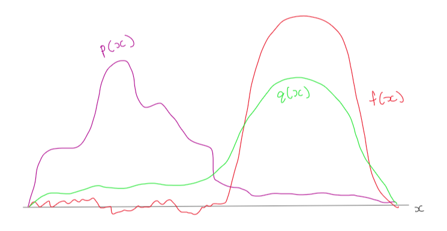

Importance Sampling
Importance sampling is an approximation method that aims at proposing a new distribution to sample from that has higher density on areas that contribute more to the expectation. That was a mouthful. Let’s break that into smaller chunks.
First, let’s quickly get this out of the way: importance sampling is an approximation method, not a sampling method. There is no real sampling procedure defined here.
Great! Now that that’s out of the way, the next thing is to introduce two distributions: the target distribution \(p(x)\) and the proposal distribution \(q(x)\). The target distribution describes the true underlying distribution of the data, whereas the proposal distribution is the new distribution we will sample from. In importance sampling, we want to control how often we sample certain values. As stated, we usually want \(q(x)\) to have high density on areas that contribute more to the expectation. What does this exactly mean?
Let’s turn our attention to Figure 1. We can see that \(p(x)\) will have trouble sampling from the right side of \(f(x)\), which is where all the action is happening. Meanwhile, \(q(x)\) will do a pretty good job at sampling from the important areas (where the action is happening); hence, importance sampling.
Now it’s important to note that, in the long run, it really doesn’t matter which distribution we use, because Monte Carlo estimates are unbiased. However, it is also important to note that, if we sample from q(x) instead of p(x), our estimate will have a smaller variance, resulting in higher accuracy.
$$\sigma^2(I_n) = \frac{1}{n} \sigma^2(f(x)\frac{p(x)}{q(x)})$$As an aside, in some applications, importance sampling is used to solve the problem of sampling from an intractable density. In this case, typically q(x) is chosen to be as close to the true (but intractable) distribution p(x).
Now that we have the big idea, how do we do the derivation? It’s actually really simple! We’ll start with the expectation, then multiplying by q(x) q(x) and finally applying Monte Carlo approximations,
$$ \begin{align*} E(f(x)) &= \int f(x)p(x)dx\\ &= \int f(x)\frac{p(x)}{q(x)}q(x)dx\\ &\approx \frac{1}{n} \sum_{i=1}^n f(x_i)\frac{p(x_i)}{q(x_i)}\\ &= \frac{1}{n}\sum_{i=1}^n f(x_i)w(x_i) \end{align*} $$where
$$w(x)=\frac{p(x)}{q(x)}, \hspace{1cm} x_i \sim q(x)$$